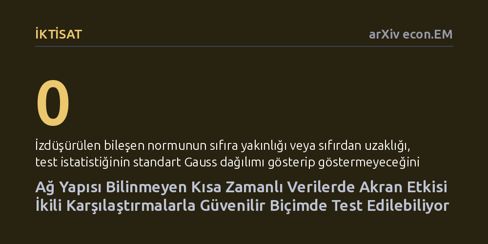

IKTISAT · arXiv econ.EM · 2026-10-24
Araştırmacılar, bireyler arasındaki etkileşim ağı bilinmediğinde ve zaman aralığı kısa olduğunda akran etkilerinin nasıl test edilebileceğini araştırdı. Ağ yapısını tahmin etmeye gerek bırakmayan, dışsal değişkenler ve ikili karşılaştırmalar üzerinden çalışan geçerli ve güvenilir yeni bir istatistiki test geliştirdiler.
Sosyal ve kurumsal çevrelerin kararlarımızı nasıl etkilediğini ölçmek için artık kimin kiminle temas ettiğini gösteren pahalı ve gizli ağ haritalarına bağımlı olmadığımızı gösteriyor.

İnsan davranışlarını ve kararlarını incelerken içinde bulunduğumuz sosyal ve kurumsal çevrenin ağırlığı yadsınamaz. Sınıf arkadaşlarının bir öğrencinin başarısına etkisi, iş arkadaşlarının üretkenliğe yansıması veya komşuların tüketim tercihleri, iktisat ve sosyal bilimlerde 'akran etkisi' başlığı altında incelenir. Ancak bu etkinin varlığını somut verilerle ortaya koymak metodolojik olarak oldukça zordur. Geleneksel modeller, araştırmacının kimin kiminle etkileşimde olduğunu, yani sistemdeki tüm ağ yapısını ve bağlantı haritasını eksiksiz bildiğini varsayar.
Gerçek dünyada ise böylesine ayrıntılı sosyal veya kurumsal ağ verilerini elde etmek ya çok maliyetlidir ya da mahremiyet nedeniyle imkânsızdır. Dahası, iktisatçıların elindeki veri kümeleri çoğunlukla çok sayıda bireyi kapsayan ancak zaman boyutu birkaç dönemle sınırlı kalan kısa panel verilerden oluşur. Zaman aralığının dar olduğu ve bireyler arasındaki gerçek temasların bilinmediği bu tip tablolarda, akran etkisini saptamaya dönük klasik analizler çoğunlukla tıkanır veya yanıltıcı çıkarımlar üretir.
Tom Boot ve Artūras Juodis, bu temel sorunu aşmak için bireyler arasındaki ağı tahmin etmeye veya haritalandırmaya çalışmayan özgün bir yaklaşım öneriyor. Geliştirilen yöntem, potansiyel akranların dışsal değişkenlerle izdüşürülmüş çıktıları ile bireyin kendi artık çıktıları arasındaki ikili karşılaştırmaları toplulaştıran bir test istatistiğine dayanıyor. Bu sayede, kimin kiminle gerçekte temas halinde olduğu bilgisine başvurulmadan ortak etkileşim izleri sürülebiliyor.
Önerilen istatistiksel çerçeve; kısa panel verilerin doğasında bulunan bireysel sabit etkileri, birimler arasındaki eğim farklılıklarını, değişen varyansı ve birim içi zaman serisi bağımlılıklarını aynı anda idare edebilecek esneklikte kurgulandı. Ayrıca dönemsel makro şokları ve ortak zaman eğilimlerini hesaba katan ağırlıklandırılmış bir uzantı da yönteme dahil edildi.
Testin sınır dağılımını inceleyen araştırmacılar, izdüşürülen bileşenin sıfırdan uzak olduğu durumlarda standart Gauss dağılımının geçerli olduğunu, ancak sıfıra yakın sınır bölgelerde dağılımın standart dışı hale gelebildiğini gösterdi. Bu kuramsal sorunu çözmek adına, her durumda geçerli kritik değerler sağlayan koşullu bir Monte Carlo yöntemi formüle ettiler.
Geliştirilen metodolojinin performansı, farklı veri üretim mekanizmalarını içeren kapsamlı Monte Carlo simülasyonlarıyla doğrulandı. İstatistiksel bir testin güvenilirliği iki temel kritere dayanır: Gerçekte bir akran etkisi yokken varmış gibi hatalı alarm vermemek (boyut kontrolü) ve gizli bir etki mevcut olduğunda bunu güvenle yakalayabilmek (test gücü).
Yapılan simülasyon deneyleri, yazarların önerdiği koşullu yöntemin birinci tip hata oranını son derece sıkı bir biçimde kontrol altında tuttuğunu kanıtladı. Aynı zamanda, ağ yapısı tamamen gizli kalsa bile testin gizli akran etkisi alternatiflerine karşı yüksek bir ayırt etme gücünü koruduğu gözlemlendi.
Bu metodolojik yenilik, özellikle eğitim politikaları, firma içi verimlilik ve tüketici davranışları gibi alanlarda ampirik iktisatçılara büyük bir pratik serbestlik sağlıyor. Araştırmacılar, sınırlı bütçelerle yürütülen ve sosyal bağların tek tek kaydedilemediği kısa süreli panel verilerde dahi akran baskısının veya çevresel etkileşimin varlığını güvenle sınayabilecek.
Bununla birlikte yöntemin niteliğini doğru anlamak gerekir. Bu test bir akran etkisinin mevcut olup olmadığını ortaya koyar; fakat etkinin hangi bireyden hangi bireye aktarıldığını ya da bağın gücünü tek tek göstermez. Dolayısıyla yöntem, mikro düzeydeki ayrıntılı ağ analizlerinin doğrudan alternatifi değil; araştırmacıların eldeki veride çevre etkisi olup olmadığını en başta ve minimum veri maliyetiyle tespit etmelerini sağlayan güçlü bir filtre görevi görmektedir.